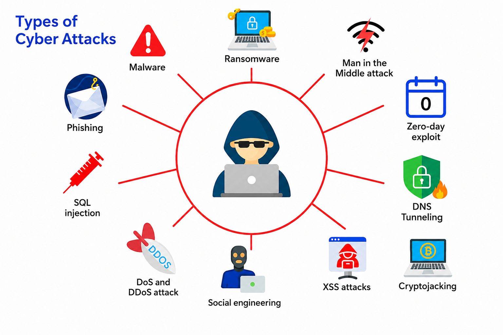

Cybersecurity Fundamentals: The Foundation Every Threat Hunter Needs
Thinking Like a Threat Hunter - Part 2 Security Controls, Telemetry and Logs: Where Threat Hunting Begins - Part 3
Introduction
Threat Hunting is often viewed as one of the most advanced disciplines in cybersecurity. It involves proactively searching for malicious activity that has bypassed traditional security controls and identifying attackers before they can achieve their objectives.
Because of this, many aspiring Threat Hunters immediately begin learning tools such as Microsoft Sentinel, Splunk, Elastic Security, Sigma rules, Sysmon, or MITRE ATT&CK. While these technologies are essential, they answer only one part of the problem they help us investigate. They don't teach us what to investigate, why an activity is suspicious, or how attackers operate.
Imagine receiving thousands of security events from firewalls, endpoint detection solutions, Windows Event Logs, DNS servers, and cloud platforms every hour.
-
How do you decide which events deserve your attention?
-
How do you differentiate normal administrator activity from malicious PowerShell execution?
-
How do you know whether a failed login is a user typing the wrong password or the beginning of a password spraying attack?
Without understanding cybersecurity fundamentals, every event looks equally important.
Threat Hunting is not about searching through logs.
It is about understanding systems, recognising attacker behaviour, analysing evidence, and making informed decisions.
Before learning how to hunt threats, we must first understand the environment we are protecting, the threats we face, and the principles that guide every investigation.
This article lays that foundation.
Understanding Cybersecurity
Cybersecurity is the practice of protecting digital systems, networks, applications, and information from unauthorized access, misuse, disruption, modification, or destruction.
Every organization relies on technology to conduct its daily operations.
-
Employees communicate through email.
-
Customers access web applications.
-
Servers process business transactions.
-
Cloud platforms store sensitive information.
-
Identity systems authenticate users.
Every one of these technologies presents opportunities for attackers.
The objective of cybersecurity is not to eliminate every attack that is impossible.
Instead, cybersecurity aims to reduce risk by making attacks more difficult, detecting malicious activity quickly, and minimizing the impact when incidents occur.
This is achieved through people, processes, and technology working together.
Threat Hunting is one of these defensive processes.
However, before hunting can begin, we need to understand exactly what we're hunting.
What is a Cyber Threat?
A cyber threat is anything capable of compromising the confidentiality, integrity, or availability of an information system.
Notice that a threat isn't necessarily an attack.
A threat represents the potential for harm.
For example:
- A ransomware group targeting financial institutions is a threat.
- An employee receiving a phishing email represents a potential threat.
- A newly discovered software exploit becomes a threat to every organization using the vulnerable application.
Threats exist whether or not an attack has already occurred.
Threat Hunters continuously assume that threats exist and actively search for evidence indicating those threats have become reality.
This proactive mindset separates Threat Hunting from many other cybersecurity disciplines.
Threat, Vulnerability, Risk and Attack
These four terms are frequently confused, even though they describe different aspects of cybersecurity.
Understanding the relationship between them helps Threat Hunters identify why attacks succeed.
Threat
A threat is anything capable of causing harm.
Examples include:
- Ransomware groups
- Insider threats
- Phishing campaigns
- Nation-state attackers
- Malware
- Credential theft
Threats represent intent and capability.
Vulnerability
A vulnerability is a weakness that can be exploited.
Examples include:
- Unpatched software
- Weak passwords
- Misconfigured cloud storage
- Default credentials
- Missing Multi-Factor Authentication
- Insecure web applications
Threat Hunters often investigate whether attackers have successfully exploited known vulnerabilities.
Attack
An attack occurs when a threat successfully exploits a vulnerability.
Examples include:
- Phishing emails stealing credentials
- SQL Injection compromising databases
- PowerShell executing malicious payloads
- Ransomware encrypting files
- Password spraying against Active Directory
An attack is the action itself.
Risk
Risk is the potential impact if a threat successfully exploits a vulnerability.
For example:
A publicly exposed Remote Desktop server protected only by a weak password creates significant risk because attackers continuously scan the internet looking for accessible services.
Threat Hunters help reduce organizational risk by discovering attacker activity before it results in business impact.
Understanding Threat Actors
Not every attacker has the same motivation.
Understanding who is attacking often explains how they attack.
Threat Hunters rarely investigate malware alone they investigate people, groups, and objectives.
The most common threat actors include:
Cybercriminals
Cybercriminals are primarily motivated by financial gain.
Their objectives include:
- Deploying ransomware
- Stealing banking information
- Selling stolen credentials
- Conducting financial fraud
- Cryptocurrency theft
These groups typically target organizations that can pay substantial ransom demands.
Nation-State Actors
Nation-state attackers operate on behalf of governments.
Their objectives often include:
- Cyber espionage
- Intellectual property theft
- Political influence
- Critical infrastructure disruption
These campaigns are usually sophisticated, well-funded, and designed to remain undetected for extended periods.
Insider Threats
Not every attack originates outside the organization.
Employees, contractors, or trusted third parties may intentionally or unintentionally compromise security.
Examples include:
- Data theft
- Privilege abuse
- Accidental information disclosure
- Misconfigured systems
- Lost devices
Because insiders already possess legitimate access, detecting malicious activity often becomes significantly more challenging.
Hacktivists
Hacktivists attack organizations to promote political, social, or ideological causes.
Their operations frequently involve:
- Website defacement
- Data leaks
- Distributed Denial-of-Service attacks
- Public disclosure of sensitive information
Script Kiddies
Script Kiddies possess limited technical expertise but leverage publicly available attack tools.
Although their sophistication is generally low, they often discover poorly secured systems exposed to the internet.
Organizations cannot ignore them simply because their skills are limited.
Common Types of Cyber Threats
Cyber attacks evolve constantly.
However, most attacks still fall into several well-established categories.
The following illustration highlights some of the most common threats encountered across modern enterprise environments.

Understanding these threats doesn't mean memorizing definitions.
Instead, ask yourself:
What evidence would this attack leave behind?
That's how Threat Hunters think.
Let's briefly examine each category.
Malware
Malware refers to software intentionally designed to perform unauthorized or harmful actions.
Examples include:
- Trojans
- Worms
- Spyware
- Rootkits
- Backdoors
Threat Hunters don't stop at identifying malware.
Instead, they investigate questions such as:
- How was the malware delivered?
- Which process executed it?
- What persistence mechanisms were created?
- Which systems communicated with external infrastructure?
- What evidence remains on the endpoint?
Phishing
Phishing continues to be one of the most effective initial access techniques.
Rather than exploiting software vulnerabilities, attackers exploit human trust.
A successful phishing attack may lead to:
- Credential theft
- Malware execution
- Business Email Compromise
- Multi-stage intrusions
Threat Hunters investigate the entire attack chain rather than focusing solely on the email itself.
Ransomware
Although ransomware is often associated with file encryption, encryption is usually the final stage of a much longer attack.
Before deploying ransomware, attackers frequently:
- Steal credentials
- Escalate privileges
- Move laterally across the network
- Disable security software
- Exfiltrate sensitive data
Threat Hunting aims to detect these earlier behaviours before encryption occurs.
SQL Injection
SQL Injection targets vulnerable web applications by manipulating database queries.
Successful exploitation may allow attackers to:
- Read confidential information
- Modify database contents
- Execute administrative commands
- Bypass authentication
Threat Hunters investigate web logs, database logs, and application telemetry to understand whether exploitation has occurred.
Social Engineering
Technology is only one part of cybersecurity.
Humans remain one of the most frequently targeted attack surfaces.
Social Engineering techniques include:
- Impersonation
- Business Email Compromise
- Fake IT support requests
- Voice phishing
- USB baiting
Threat Hunters correlate authentication events, endpoint activity, and user behaviour to determine whether social engineering successfully compromised an account.
Denial-of-Service (DoS / DDoS)
Unlike stealthy attacks, Denial-of-Service attacks prioritize disruption.
Their objective is to overwhelm services, preventing legitimate users from accessing critical resources.
Threat Hunters analyse:
- Firewall telemetry
- Network traffic
- Load balancer logs
- Application performance metrics
to distinguish malicious traffic from legitimate business activity.
Zero-Day Exploits
Zero-day vulnerabilities become particularly dangerous because no security patch exists when attackers begin exploiting them.
Traditional signature-based detection often provides little protection.
Threat Hunters therefore rely heavily on behavioural analysis to identify suspicious activity rather than depending solely on known indicators.
Man-in-the-Middle (MitM)
Man-in-the-Middle attacks occur when an attacker intercepts communication between two systems.
Potential evidence includes:
- Certificate anomalies
- Unexpected proxy traffic
- Authentication irregularities
- Network communication patterns
DNS Tunnelling
DNS is one of the most trusted protocols within enterprise networks.
Attackers abuse this trust by embedding malicious communications inside DNS queries.
Threat Hunters investigate:
- Unusually long DNS requests
- High-frequency DNS queries
- Suspicious domains
- Rare domain lookups
to identify covert communication channels.
Cryptojacking
Rather than stealing data, cryptojacking steals computing resources.
Compromised systems secretly mine cryptocurrency, consuming excessive CPU, memory, and power.
Threat Hunters often identify cryptojacking through abnormal process behaviour, sustained high resource utilization, or unexpected outbound network connections.
Looking Beyond the Attack
At first glance, each of these threats appears very different.
Phishing targets users.
SQL Injection targets applications.
Ransomware targets data.
DNS tunnelling abuses network protocols.
Yet experienced Threat Hunters recognise something important.
They all leave evidence.
Some create new processes.
Others generate authentication events.
Some modify the Windows Registry.
Others establish unusual network connections.
Threat Hunting isn't about memorising attack names.
It's about understanding the traces attackers leave behind and knowing where to find them.
In Part 2, we'll build on this foundation by learning how Threat Hunters investigate those traces using the 5W1H methodology, explore the cybersecurity frameworks that guide investigations, and understand why frameworks such as MITRE ATT&CK, the Cyber Kill Chain, and the Pyramid of Pain have become essential knowledge for modern defenders.